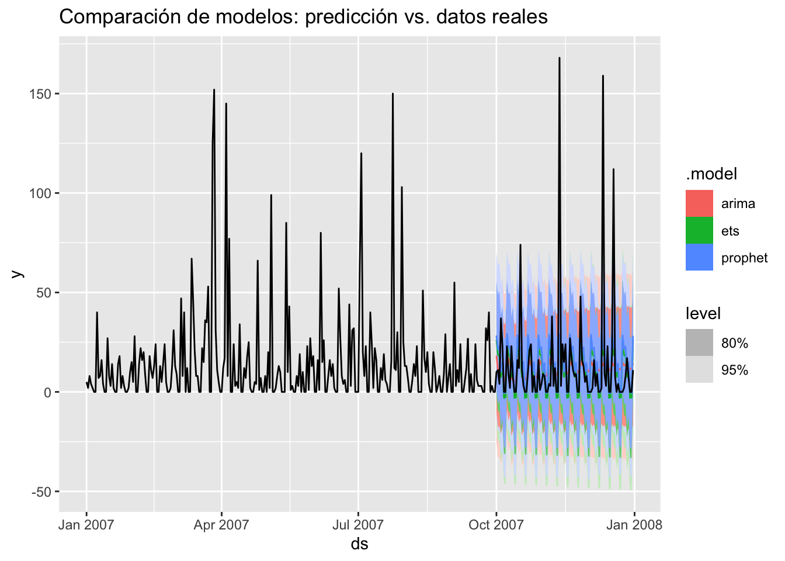

Capítulo 6 Capitulo 6 Comparacion de modelos
Para evaluar el desempeño de distintos enfoques en la predicción del ausentismo laboral, se realizó una comparación entre tres modelos ampliamente utilizados en series de tiempo: ARIMA, ETS (suavizamiento exponencial) y Prophet. Cada uno de estos modelos incorpora supuestos y mecanismos distintos para capturar patrones como la tendencia, la estacionalidad y la variabilidad residual. El objetivo de esta comparación es identificar cuál de ellos ofrece mejores capacidades de ajuste y predicción a partir de los datos históricos disponibles. Para ello, se utilizó un conjunto de entrenamiento con datos diarios, y se aplicaron métricas de desempeño como el RMSE y MAE, además de visualizar sus pronósticos para un horizonte de tres meses. Esta evaluación permite establecer fortalezas y limitaciones relativas de cada enfoque, facilitando una selección informada del modelo más adecuado según el contexto y los objetivos analíticos.
6.1 Métricas a implementar
Para la comparación de modelos se utilizan las siguientes métricas:
Error medio (ME – Mean Error) : Es el promedio de todos los errores de un conjunto de observaciones.Puede estar sesgada debido ala compensacion de errores positivos y negativos pero sirve como indicador de asimetrias en la distribucion de los errores
La raíz del error cuadrático medio (RMSE – Root Mean Square Error): Es la desviación estándar de los errores y tiene la ventaja de tener las mismas unidades que la variable predicha, por lo que es más fácil de interpretar directamente.
Error absoluto medio (MAE – Mean Absolute Error): Corrige la inexactitud del error medio al poseeer valores absolutos, da un promedio de la magnitud absoluta de todos los valores de los errores, sin importar si eran positivos o negativos.protege los valorrs atipicos
Error porcentual medio (MPE – Mean Percentage Error ): Es el promedio de errores porcentuales por los que cada previsión difiere de sus correspondientes valores reales observados y no es una metrica adecuada para conjuntos de datos que contienen valores observados iguales a cero
Error porcentual absoluto medio (MAPE – Mean Absolute Percentage Error): Esta metrica arregla el problema con la compensación de errores como lo hace el MAE pero funciona mejor si no hay extremos en los datos y no hay ceros.
Error cuadrático medio (MASE – Mean Square Error): Corrige tambien las inexactitudes del error medio y comparado con el MAE otorga una mayor penalización en los errores de predicción grandes.
Autocorrelacion (ACF1): Es un coeficiente de correlacion entre una observacion actual y sus valores retardados en distintos momentos. Mide la similitud entre la observacion actual y sus valores pasados, indicando la presencia de patrones o tendencias repetitivos en los datos.
# Asegurarse que los datos tienen las columnas ds (fecha) y (valor)
# Convertir el ts a tsibble para que pueda ser usado con la librería fable
ts_diaria <- as_tsibble(serie_diaria, index = ds)
# Filtrar datos solo del año 2007 si fuera necesario (opcional si ya está limpio)
ts_diaria <- ts_diaria %>%
filter(year(ds) == 2007)
# Dividir el conjunto: entrenamiento (enero a septiembre), test (octubre a diciembre)
train <- ts_diaria %>%
filter(ds < ymd("2007-10-01"))
test <- ts_diaria %>%
filter(ds >= ymd("2007-10-01"))
# Ajustar los modelos con los datos de entrenamiento
fit <- train %>%
model(
arima = ARIMA(y),
ets = ETS(y),
prophet = prophet(y ~ season("week"))
)# Predecir el mismo horizonte que test (ej: 92 días para octubre-diciembre)
forecast_fit <- forecast(fit, h = nrow(test))
# Visualizar comparación entre predicción y datos reales
autoplot(forecast_fit, ts_diaria) +
ggtitle("Comparación de modelos: predicción vs. datos reales")
## # A tibble: 3 × 10
## .model .type ME RMSE MAE MPE MAPE MASE RMSSE ACF1
## <chr> <chr> <dbl> <dbl> <dbl> <dbl> <dbl> <dbl> <dbl> <dbl>
## 1 arima Test 1.40 26.7 12.8 -Inf Inf NaN NaN -0.0640
## 2 ets Test 2.19 25.7 12.2 NaN Inf NaN NaN -0.127
## 3 prophet Test -0.613 25.6 12.4 NaN Inf NaN NaN -0.1316.1.0.1 Conclusiones
Al comparar el desempeño de los modelos ARIMA, ETS y Prophet sobre el conjunto de prueba (octubre a diciembre de 2007), se observa que los tres modelos presentan errores similares en términos absolutos, aunque con algunas diferencias relevantes en su comportamiento. El modelo Prophet mostró el menor RMSE (25.6), lo que indica que, en promedio, sus errores más grandes fueron ligeramente menos severos que los de ETS (25.7) y ARIMA (26.7). En términos de MAE, el modelo ETS obtuvo el mejor desempeño (12.2), seguido muy de cerca por Prophet (12.4), mientras que ARIMA presentó el mayor error absoluto promedio (12.8), lo que lo posiciona como el modelo menos preciso en esta comparación.
En cuanto al sesgo de las predicciones (ME), ARIMA y ETS tienden a sobreestimar los valores reales (ME positivo), mientras que Prophet mostró un leve sesgo negativo, indicando una ligera tendencia a subestimar las observaciones. No obstante, este sesgo en Prophet es pequeño y posiblemente no significativo en la práctica.
Por otro lado, las métricas de error basadas en porcentajes (MPE y MAPE) y las escaladas respecto a modelos base (MASE y RMSSE) no son confiables en este caso por contar con valores reales iguales a cero, razón por la que muestran valores indefinidos (NaN) o infinitos (Inf). Esto afecta la estabilidad numérica de estas métricas. Para este tipo de series, se recomienda complementar con otras métricas como SMAPE o enfocarse en MAE y RMSE.
Finalmente, el análisis de la autocorrelación de los residuos (ACF1) muestra que los tres modelos presentan valores cercanos a cero, lo cual sugiere que no hay una estructura significativa de autocorrelación en los errores, lo que es un buen indicio de adecuación del modelo.
Aunque todos los modelos ofrecen un desempeño razonablemente similar, ETS y Prophet destacan como las mejores opciones para este caso específico, con Prophet ofreciendo un balance adecuado entre bajo error cuadrático medio y menor sesgo.